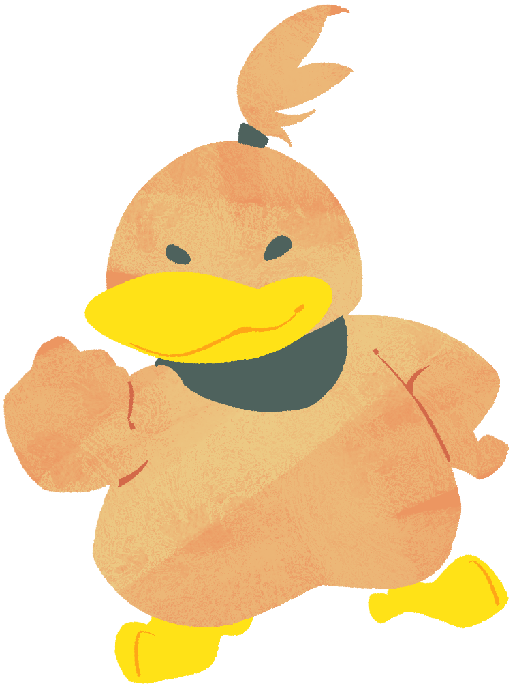

Gekirin (Male)A brother of Kururin who is slightly younger, and quite a bit burly in looks. He is the largest sibling. He is very short-tempered, which makes it quite easy for him to snap. Despite this, he's actually a very nice person on the inside with a heart of gold, and can even show signs of worry. |
 |